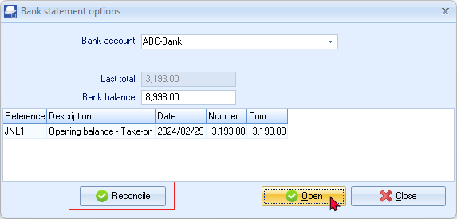
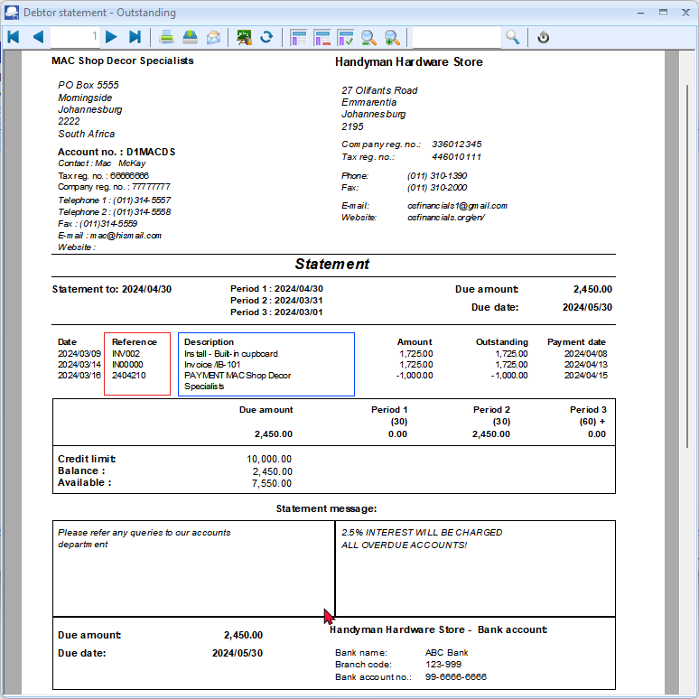
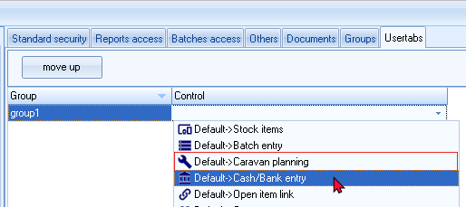
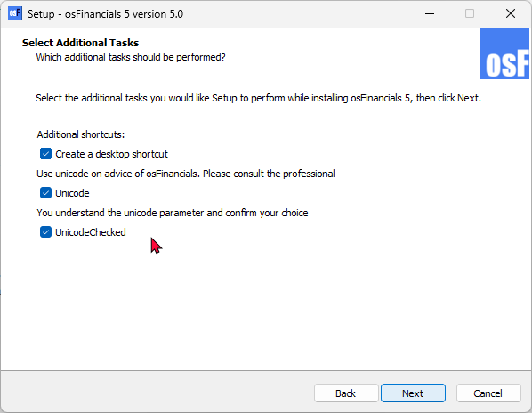
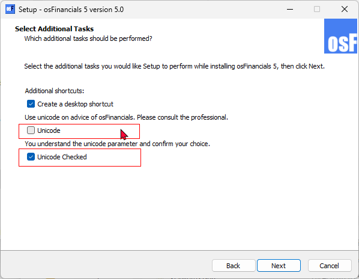
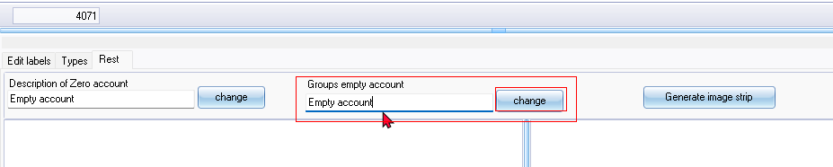
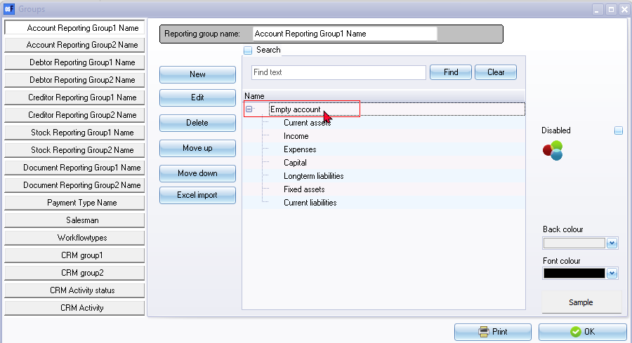

FIXES - TurboCASH5-3 - Release-Candidate-7
FIXES - TurboCASH5-3 - Release-Candidate-7
Compiled TurboCASH5-3-Release-Candidate-7 - after POS Fixes.
Updated osFinancials5.1.0.233 (from osFinancials5.1.0.227)
ADDED / Include OpenAI
OpenAI import on bank import form. Set the values in Setup -> Company data second tab and press save.
FIXED : tcash.ini files AppName=TurboCASH5-2025
AppName=TurboCASH5 change from TurboCASH5-2025 in all Language files of the TurboCASH5-MERGE Install sorce - Labels cut off in some screens and in some languages - Also changed in Inno Setup script.
FIXED POS : Compiled TurboCASH5-Release-Candidate-6 with the POS invoice now displaying
Works can see screen and interface is now displaying.
FIXED issues:
- POS Invoice discount - Not working - For example, if add 10% discount it is not displays on the POS Invoice screen and Payment does not reduce discount.
- Quantities entered e.g. 2 does not change the selling price - x2 showing in Quantity column - Payment = 1 item only.
- Printing POS Invoice / Reprinting POS Invoices / Setup -> POS - Cannot print Invoices or test printer - Prints blank with 0kb - I use Microsoft print PDF and cannot open these prints in Edge web browser. Think the last time got the Invoices printing was in TurboCASH4/osFinancials4.
FIXED : Budgets MSSQL Error
Updated Help file (EngHelp.chm)
- Updated the Help file to include TurboCASH in text e.g. osFinancials5/TurboCASH5. The reason for this is to get it ready for ChatGPT Search and other AI searches on the web.
- Release Candidate 3 source = Wednesday, 25 December 2024 - 03:55:54 - osFinancials5/TurboCASH5 - Business Class - Help
- Help file outdated = Wednesday, 18 December 2024 - 06:23:01 - osFinancials5/TurboCASH5 - Business Class - Help
Fixes in progress - Debtor Statements / Creditor Remittance Advices and Age analysis reports cut-off Description text
- Firebird databases - Debtor Statements / Creditor Remittance Advices and Debtor Age analysis / Creditor Age analysis reports not updated with Fixes to Descriptions not printing fully (Characters cut-off) in nounicode=FALSE setting (Unicode enabled for most users). References Such as the Document number and references entered in batch entry screens - still n cuts-off only in Firebird databases. Need to add similar sgl "cast(messages.SDescription as varchar(255)) as SDESCRIPTION_1 " for the SREFERENCE - I may need some guidance and pointers to fix these.
- MSSQL databases - Prints correct in all these reports - Prints the full References and Descriptions.
Folders not included
execute\localfiles\dbname folder not included.
Bank import - Shows the Reconcile button and Match log tab not correct
Neet to check the configuration / activation of the bank import plugin. The Reconcile button should not be displayed as in osFinancials5.1.0.227.

The Match log may display incorrect data
FIXED : Outstanding : Debtor Statements / Creditor Remittance Advices and Age analysis reports SREFERENCE cut off text
In Firebird Databases, the Reference only displays 7 Characters - not the full document number or reference as entered in the Reference field of batch entry screens. The Descriptions were fixed in TurboCASH5-2025-Release-Candidate-3 (Also replicated in osFinancials5-MERGE-7)
Replicated in nounicode=FALSE setting (installs for most users)
In MSSQL Databases, it displays the full characters and does not replicate these Reference and Description labels not fully printed.
Example of Debtors statement - Outstanding. NOTE the Debtor statement prints the full characters, while the Debtor Age analysis and Creditor Remittance advices - Outstanding and Creditors Age analysis reports, replicates the same issues with the Reference not printing in Firebird databases fully.
NOTE the Debtor statement prints the full characters but not the Debtor statement - Outstanding

The Descriptions is fixed in TurboCASH5-2025-Release-Candidate-3 (Also fixed in osFinancials5-MERGE-7)
FIXED : Transactions sequence by date : After fixing the SReference for the Document number and References entered in Batches, the transactions prints according to "order by 11" instead of "order by 12" to print the transactions by date (TN_906552) fixed in all reports updated.
FIXED : Debtor Statements / Creditor Remittance Advices and Age analysis reports cut off text
On Debtors statements, the TrExpression26 = TRANSACTDETAIL.SDESCRIPTION_1 displays only 20 characters if nounicode=FALSE setting also in Data configuration and on printed report.
If the nounicode=FALSE setting is set to nounicode=TRUE, the full descriptions on Debtor statements will be printed.
Similar Descriptions issues were replicated in the following reports:
Debtors
- Debtor statements
- Location : plug_ins\reports\systemreports\TRN_160\TRN_1090 \TRN_1090 - Debtor statement
- Location : plug_ins\reports\systemreports\TRN_160\TRN_1090 \TRN_906552 - Debtor statement - Outstanding
- Debtors - Age analysis (Rreports)
- Location : plug_ins\reports\userreports\TRN_160\TRN_906142 - Balances detail
- Location : plug_ins\reports\userreports\TRN_160\TRN_906143 - Balances detail history (open item)
- Location : plug_ins\reports\userreports\TRN_160\TRN_906147 - Balances
Creditors
- Creditor remittance advices
- Location : plug_ins\reports\systemreports\TRN_161\TRN_1090 \1089 - Creditor remittance advises
- Location : plug_ins\reports\systemreports\TRN_161\TRN_1090 \TRN_906551 - Creditor remittance advises - Outstanding
- Creditors - Age analysis (Reports)
- Location : plug_ins\reports\userreports\TRN_160\TRN_906142 - Balances detail
- Location : plug_ins\reports\userreports\TRN_160\TRN_906143 - Balances detail history (open item)
- Location : plug_ins\reports\userreports\TRN_160\TRN_906147 - Balances
Added cast message field length to Descriptions in TRANSACTDETAIL
|
SELECT cast(transact.FAmount as decimal(12,2)) p1, transact.*,Account.*, cast(messages.SDescription as varchar(255)) as SDESCRIPTION_1 FROM transact LEFT OUTER JOIN account ON (transact.WAccountID = account.WAccountID) join Messages on (transact.WDescriptionid = messages.WMessageID) |
FIXED - Access control - User tabs - Default -> Caravan planning
Default -> Caravan planning item in User tabs - Probably for a plugin. Need to remove it. Needs to be available only if the plugin is activated. (osFinancials5.1.0.230)

MSSQL ERROR - Budget
Incorrect syntax near 'a'.
Included in the next merge install
Document layout file
TRN_906277.rep Document layout file (15 code) Moved the Document type in the Header to the centre as printing to much to the right of the layout file.
Readme.txt android
In TurcoCASH5 root directory but not in osfinancials5 root installation directory
Deleted file in TurboCASH5 install as Android app never took off (discontinued)
Subscriptions MSSQL Error
Operand type clash: date is incompatible with int
MSSQL - Set default language
In MSSQL / Firebird the Apply button does not save the language if selected in Access control for no users.
Next release Fixes Updates
Languages updated
Fixed typo in Afrikaans language file
LabelID 337 Verskafferreoere => Verskafferretoere missing "t".
Scheduled for next installs compile.
Tutorials Updated
Images
All tutorials - Added the Compressor and Drill press images to Stock items for tutorial and documentation purposes.
These images were not included, since these tutorials was created from scratch on a blank database.
Resource name in Calendar
For TurboCASH5 changed the resource shipped in the Calendar from
osFinancials/ TurboCASH in Tutorials shipped with TurboCASH5
For osFinancials, the resource remains osFinancials.
Unicode install and nounicode setting
Unounicode=FALSE
If you check both the Unicode and Unicode Check tick-boxes, the Unicode setting will be set as false in the osf.ini file:
nounicode=false

This will cause the MSSQL error, when opening a Set of Books (MSSQL database type).
UNICODE SETTING in FIREBIRD ERRORS
Unicode setting will be set as false in the osf.ini file:
nounicode=false
Entering an ê (Alt+0136) or ë (Alt+0137) in for example Company name (Registered company names may include these characters, including existing users) replicates this error:
Dynamic SQL Error
SQL error code = -303
arithmetic exception, numeric overflow, or string truncation
This error is not replicated in the following options
Setup → Accounts
Setup → Batches
Setup → Groups
Budgets (Reports ribbon)
Setup → Reporting dates
Debtors
Creditors
Documents NOTE The companyname (Setup → Company info with this error prints these characters incorrectly on document layout files
Need to check some more forms - or maybe this could be checked out in osFinancials core and plugins
nounicode=TRUE
If you do not check the Unicode checkbox (leave blank) and only select (tick) the Unicode Checked tick-box, the Unicode setting will be set as false in the osf.ini file:
nounicode=true

This will resolve the MSSQL error, when opening a Set of Books (MSSQL database type). Can open all Set of Books (MSSQL database type).
Unounicode=True setting
MSSQL Database
Open Set of Books - MSSQL database- nounicode=TRUE
Can open Sets of Books in Firebird and MSSQL databases. This solves the issue with Opening a Set of Books error if nounicode=FALSE.
"Invalid object name 'OPREPORT'."
Unicode setting needs to be set to nounicode=TRUE.
Replicates the error in osf5.1.0.227 with the Install nounicode=FALSE setting =
"Invalid object name 'OPREPORT'."
Cannot open MSSQL all books in both in osFinancials5.1.0.227 and in osFinancials5.1.0.189. This error has to do with the nounicode=FALSE setting is set to false in the osf.ini file.
nounicode=false.
Changing the nounicode=TRUE setting in the osf.ini file to true, then all MSSQL Sets of Books can be opened:
nounicode=true
In osFinancials5.1.0.227, the Unicode settings is implemented in the install. Instead of editing the Unicode settings in the osf.ini file using a text editor, you can set the Unicode settings in the install.
Reports - MSSQL database- nounicode=TRUE
All reports and layout files including spreadsheet reports, seems to print fine and neatly except for the following 4 reports:
- systemreports -Stock in / out
Location : ...\plug_ins\reports\systemreports\TRN_1999\TRN_906112 (Stock in / out)
- REPORTS/STOCK -Stock sidebar reports - Historical value
Location : ...\plug_ins\reports\REPORTS\STOCK\LANG_906031 (Historical value)
- userreports - Debtors - Outstanding at date
Location : plug_ins\reports\userreports\TRN_160\TRN_947\TRN_906104 - Debtors outstanding at date
- userreports - Creditors - Outstanding at date
Location : plug_ins\reports\userreports\TRN_161\TRN_947\TRN_906103 - Creditors outstanding at date
Plugins - MSSQL database- nounicode=true
Subscriptions MSSQL Error
Operand type clash: date is incompatible with int
Colours Select for Reporting groups
Setup → Groups
Setting Colours in Groups does not change easily - MSSQL databases is more sticky than in Firebird databases
Cannot set the Account group 1 colours - Loses selected colours
Standard Theme palette - Hard colours - Cannot make softer colours using Custom colours
Debtor groups, Creditor groups, Document groups and Stock groups works but sticky - If the grids is open, you may select Tools → Close active forms and access the grid to display the colours.
Customise Languages - Rest tab - Empty account / No group
Replicated in both Firebird and MSSQL databases.
The Customise languages - Rest tab does not store "Empty account" in Groups when you click on the Change button (second button).
It displays "Empty account" from the first "Description of Zero account". It does not save correctly.
Difficult for translations or customisation.
Need to change the first Change button and confirm to change it to for example no group have to enter "No group" and click Change (second button). Thereafter need to reopen the Set of Books for changes to have an effect.


Access control
Posting / Delete buttons
Need to update documentation
Access control - Documents tab - Document posting tick-box - Add Posting and Delete buttons to the Documents grid sidebar. Does not work for single users - Need to setup users before this Document posting will be available for a user.
It is just a entry in the database with user id 0
Default language for a Set of Books
In Firebird and MSSQL database types cannot change the language on Setup → Access control (System language) and click the Apply button as the default language for the Set of Books. It reverts back to the original language e.g. Afrikaans if you change it to English.
Workaround - You have to use the Switch language option on the Start ribbon to update the System language in Setup Setup → Access control.
Language can be set at user level. So user a can login with language a and user b with language b
System language - Default language for the Set of Books
Language - Cannot select a language (empty / blank). You need to use the Multi-language Set of Books plugin (Manual - Shop ) to select a language added in the Setup → Groups - Languages reporting group.
Access Violations - Reports
Ledger analyser - Balance sheet
Produces Access violation error
Access violation at address 525C8283 in module 'rtl290.bpl'. Read of address 2E300858
Balance sheet prints after second attempt
Graphs
Some Graphs print Access violations click 1 or sometimes 2xtimes then it prints.
Cost centres
Cost centres were producing similar Access violation errors in the Balance sheet and some reports. Need to click 1 or more tipes then the report prints.
Export - Accounts
Spreadsheet import - Accounts
- Spreadsheet export import - No Sub-accounts Workaround delete accounts and recreate accounts.
- Export (Setup ribbon) Export tab txt file imports well - Need to delete the first tax account (No tax tab) and zero-rated items.
You can check the Tax percentages (User reports → Tax to see incorrect tax percentages such as the first Tax code (sub-account), which does not incluse a Tax tab and percentage.
Import Stock
Stock - Import - Tab-delimited .txt file
The statement has been terminated. - Tab delimited *.txt file
The INSERT statement conflicted with the FOREIGN KEY constraint "FK_DOCLINE_STOCK". The conflict occurred in database "MSSQL-TOETS-NUTSMAN", table "dbo.Stock", column 'WStockID'.
Spreadsheet Export from Firebird databases and Import to MSSQL works.
Imported Batches
Replicated in both Firebird and MSSQL Database types.
F8: Batch list Empty accounts on the Unposted batch report.
Balancing the batch will print only the balanced accounts - need to reselect or confirm the imported accounts
Reselect the accounts - list on Batch F8:List Unposted batches report.
Bank import - Import Bank statement
Delete Bank account with Posted transactions
Bank statement - Import Account from spreadsheet - Cannot delete bank account
The statement has been terminated.
The DELETE statement conflicted with the REFERENCE constraint "FK_TRANSACT_ACCOUNT". The conflict occurred in database "MSSQL-MY-BOOKS", table "dbo.TransAct", column 'WAccountID'.
If you have posted transactions to a bank account, you first need to cancel reverse posted batch and erase the batch to process the import bank statement
Similar errors in Firebird databases.
Bank-Import Open Item link
When allocating transactions for an Open item account, the Open item selection screen.
The statement has been terminated.
The INSERT statement conflicted with the FOREIGN KEY constraint "FK_OILINKSPRE_BATCH". The conflict occurred in database "MSSQL-MY-BOOKS", table "dbo.BatCon", column 'WBatchID'.
Imported Documents
Document Export Import plugin used to export documents from a Set of Books (Firebird Database). Imported into a Set of Books (MSSQL database).
Import Exported documents
Financial entry
Financial Entry - Need to reselect the Ledger Account and confirm it is correct.
Can select a main account (with sub accounts).
Tax by default looks like the Tax is codes is correct, Tax amount on Documents grid - When opening the document the tax code may be blank. Need to select the correct tax code.
Update Documents
When updating documents, some errors were replicated in MSSQL databases. Some of these similar errors is replicated in Firebird databases.
Fault in rounding please set your rounding margin document:AK000001 of 150
You cant post to the zero tax account!
Need to select the correct Tax account.
AK000001 Algemene Grootboek 1000 0
Financial Entry - Imported Documents - Need to select a Ledger account
Languages
Language files updated
The Afrikaans and 26 English language files were updated with fixes to typos, etc. See - Language-files-changelog.docx
- Location on GitHub : Changelog - https://github.com/Digidanosf/osfinancials-development/blob/main/changelog-merge/Language-files-changelog.docx
- Language files needs to be merged in " .../bin/languages " directory.
- Location on GitHub : https://github.com/Digidanosf/osfinancials-development/tree/main/languages
Known issues - Language Files Label Inconsistencies
Some Language Files Label Inconsistencies: were found:
- Bank import plugin:
- Receipt column LabelID 1100 Receipt may need to be changed to labelID 2233 to reflect Receipts to be consistent with the plural LabelID 2233 reflecting Payments.
- Changing LabelID 1100 Receipt to Receipts will cause the Receipt options screen to print Receipts instead of Receipt.
- Document Status: In the Document entry form's header refers to Open (LanguageID's 163, 20120 or 21042)., which is used for the Open button on most screens. There is LabeID 580, Open for posting. Unposted (LabelID's 962 or 1097 shows in the Status column of documents grid.
Outstanding Translations
All the Outstanding translations which is not translatable in the osFinancials5 source, including plugins are listed with screenshots, notes and possible LabelID's. These outstanding translations is listed in various documents according to function and each of the plugins.
- Outstanding Translations osFinancials Core:
- Location on GitHub : https://github.com/Digidanosf/osfinancials-development/tree/main/translations
- Outstanding Translations Plugins:
- Location on GitHub : https://github.com/Digidanosf/osfinancials-development/tree/main/plugins-translations
- Outstanding Translations DynaReg Plugins:
- Location on GitHub : https://github.com/Digidanosf/osfinancials-development/tree/main/plugins-dynabreg
Reports, document layout files
All reports and document layout files are translatable via the language files, except specific document layout files designed for the Dutch market.
Meticulous efforts have been exercised to resolve any language inconsistencies and include fixes for example, some lost in translation labels not printing in the Debtor or Creditor preferred language in the Report designer.
- Location on GitHub : https://github.com/Digidanosf/osfinancials-development/tree/main/reports/plug_ins/reports This repository contains all updated reports, document layout files, including those related to plugins. This repository can be merged with the '...\plug_ins\reports\' directory.
Themes
- Obsolete folders and files to Delete in ...bin/themes folder:
- My-Material
- svg-theme
- svg-theme.zip
- Known issues - Classic Report icons display in SVG themes: The classic report icons are still displaying in SVG themes. This issue is addressed Compatible Theme Skins available for a download on GitHub to be to ensure consistency across themes.
- Issue: Classic report icons are still displaying in SVG themes, which affects consistency across themes.
- Resolution: Compatible theme skins are available for download on GitHub to address this issue and ensure consistency. These need to be updated and included in the next osFinancials installation.
- Location on GitHub : https://github.com/Digidanosf/osfinancials-development/tree/main/themes
- FIXED - Creditor control icon not loading correctly
- The creditor icon - does not change when creating an image strip in all themes - Setup → Accounts and in Ledger viewer - It is not correctly rendered / displayed.
- Checked properties of creditor svg files and replaced the Acccreditors.svg icons and created new image strips in all themes containing svg icons with the correct colour.
- Creditor control icon not loading correctly - Classic icon in some themes - Fixed in osFinancials5.1.0.109 - but with the osFinancials5.1.0.127 / osFinancials5.1.0.189 update does not include these fixes.
- Compatible Theme Skins - Each theme folder includes a customizable theme skin. There are 34 custom themes available for osFinancials5/TurboCASH5. You can view screenshots of the available themes to help you make your choice.
- Installed Themes: These 7 themes are included in the osFinancials5 installations and may include fixes. They can be downloaded as a zip file and copied to the `.../bin/themes` folder of your osFinancials5 installation directory.
- Location on GitHub : https://github.com/Digidanosf/osfinancials-development/blob/main/themes/themes-installed.zip
- New Themes - A collection of 27 themes. These themes are available for download as a zip file. Once unzipped, you can copy the themes you need to the `.../bin/themes` folder of your osFinancials5 installation directory. These themes are not included in the osFinancials5 installs..
- Change the colour of your svg icons in one go - In osFinancials5, you have the option to easily customize the colour of all 227 icons (in the SVG "Scalable Vector Graphics" file format) used in the interface. This customization process can be completed in less than a minute by utilizing a text editor such as Notepad++ and the Search and Replace feature. By replacing the default black colour with a colour of your preference, you can personalize the appearance of the icons in a copy of the "Material" theme to suit your taste.
Documentation Update Overview
The Help documentation for osFinancials has undergone significant updates to enhance usability, accuracy, and relevance. This update is structured into two main sections: Release Notes and Core Functionalities. Below is a detailed breakdown of the recent changes and improvements made to the documentation.
Release Notes
The Release Notes section provides a comprehensive overview of known issues, fixes, and updates for osFinancials core, reports, and plugins. This section is particularly useful for tracking changes across different versions of the software, such as migrations from Delphi 10 to Delphi 11 and Delphi 12. Key features include:
- Known Issues and Fixes: Detailed notes and screenshots of bugs found and fixed in pre-release versions.
- Retesting: Each known issue is retested with every install and update to ensure ongoing stability and reliability.
- Firebird and MSSQL Compatibility: Updates and notes on compatibility with Firebird and MSSQL databases across the core, reports, plugins, and other components.
Core Functionalities
This section covers all core functionalities of osFinancials5.1/TurboCASH5-3, including reports, the report designer, and plugins. The documentation is currently being updated to provide a more comprehensive guide to testing all features. Given that osFinancials and TurboCASH share the same source code, this documentation can also serve as a useful reference for future releases of TurboCASH.
Specific Updates in the osFinancials Help System
The following specific updates have been made to the osFinancials Help system:
- Webshop Links: Fixed approximately 400 links that were previously pointing to http://www.osf-boekhoudpakket-administratie.nl/en/webshop to https://www.osfinancials.org/en/webshop in the English Online Help and Afrikaans Online Help. This update applies to both the English Online Help and Afrikaans Online Help, as well as the CHM help files.
- Afrikaans Language: Enhanced the Afrikaans content with more translations and modernized language. This update aims to improve the accessibility and readability of the documentation for Afrikaans-speaking users.
- SEO Metatags: Added and updated metatags to improve the search engine optimization (SEO) of the documentation, making it easier for users to find relevant information through search engines.
- New and Updated Topics: Added and updated several topics, including:
- Blockchain: Introduced new content related to blockchain technology and its integration with osFinancials.
- Activa: Updated information on managing assets within the system.
- Price agreements: Expanded documentation on setting up and managing price agreements.
- Stock Sidebar Reports: Added new sections on generating and interpreting stock sidebar reports.
These updates will be included in the next release of the help files, ensuring that users have access to the most current and accurate information.
Conclusion
The recent updates to the osFinancials Help documentation reflect a commitment to providing users with a comprehensive, accurate, and user-friendly resource. By addressing known issues, updating core functionalities, and enhancing language support, the documentation aims to support users in effectively utilizing osFinancials and TurboCASH.
Firebird and MSSQL Compatibility
Ensuring compatibility with different database systems is crucial for the flexibility and scalability of osFinancials5.1/TurboCASH5-3. The following updates and notes pertain to Firebird and MSSQL compatibility:
Core
- Database Connectivity: Enhanced database connectivity modules to support both Firebird and MSSQL.
- Performance Optimization: Optimized core functionalities for improved performance on both Firebird and MSSQL databases.
Reports
- Query Compatibility: Ensured that all SQL queries used in reports are compatible with both Firebird and MSSQL syntax.
- Report Generation: Tested and verified that report generation processes run smoothly on both database systems.
- Error Handling: Implemented robust error handling mechanisms to manage potential issues specific to each database system.
Plugins
- Database-Specific Features: Added support for database-specific features and functions in plugins to maximize compatibility.
- Configuration Options: Provided configuration options within plugins to allow users to specify their preferred database system.
- Cross-Database Compatibility: Ensured that plugins can operate effectively regardless of the underlying database system.
Other Components
- User Interface: Updated the user interface to provide clear feedback on database connectivity and compatibility status.
- Documentation: Included detailed documentation on setting up and configuring osFinancials with Firebird and MSSQL databases.
- Support and Troubleshooting: Expanded support resources and troubleshooting guides to assist users with any compatibility issues.
Conclusion
By incorporating Firebird and MSSQL compatibility updates into the Release Notes, we aim to provide users with a more comprehensive understanding of the software's capabilities and ensure a smoother experience when working with different database systems. These updates will be included in the next release of the help files, ensuring that users have access to the most current and accurate information.
Updated Reports - Larger Database Fields
The Sets of Books for the Firebird Database type now supports larger field lengths for data entry, catering to the specific requirements of larger businesses or organisations. This enhancement allows for more detailed and comprehensive data management, particularly in scenarios where extensive account codes and descriptions are necessary.
Location on GitHub : https://github.com/Digidanosf/osfinancials-development/tree/main/firebird-databases/CUSTOMISE-BOOKS-ADVANCED
- CUSTOMISE-EMPTY-BOOKS-3X3-DIGITS.zip
- CUSTOMISE-EMPTY-BOOKS-4X3-DIGITS.zip
- CUSTOMISE-EMPTY-BOOKS-5X3-DIGITS.zip
- CUSTOMISE-EMPTY-BOOKS-6X3-DIGITS.zip
- CUSTOMISE-EMPTY-BOOKS-7X3-DIGITS.zip
- CUSTOMISE-EMPTY-BOOKS-8X3-DIGITS.zip
|
osFinancials Field length - Shop - Payment per request - In addition to these options, you may shop for customised field lengths. |
New Sets of Books
Location on GitHub : https://github.com/Digidanosf/osfinancials-development/tree/main/firebird-databases/4-DIGIT-BOOKS
These Sets of Books, based on the Firebird database type, include a basic Chart of Accounts supporting 4-digit main account and 3-digit sub-account codes, along with larger database fields.
4-DIGIT-BOOKS
- 4-EN-SOUTH-AFRICA-GENERIC.zip: This generic Set of Books includes 4-digit main account and 3-digit sub-account codes, based on the South African Chart of Accounts. It incorporates specific South African terminology and includes the structure of South African VAT-accounts and VAT-codes, aligned with the VAT201-return.
- 4-AF-SUID-AFRIKA-GENERIES.zip: This generic Set of Books includes 4-digit main account and 3-digit sub-account codes, based on the South African Chart of Accounts in Afrikaans. It incorporates specific South African terminology and includes the structure of South African VAT-accounts and VAT-codes (Belasting op Toegevoegde Waarde (BTW) Suid-Afrika (Afrikaans), aligned with the VAT201-return.
- 4-EN-UK-GENERIC.zip: This generic Set of Books includes 4-digit main account and 3-digit sub-accounts, based on the United Kingdom (UK) Chart of Accounts. It incorporates specific UK terminology and includes Value Added Tax (VAT) - United Kingdom accounts based on the VAT Standard rate scheme. The VAT-account and VAT-codes structure in the Chart of Accounts is designed to match the various boxes on the UK VAT return. NOTE: Various schemes for VAT may be applicable for various scenarios.
Conclusion
These examples provide a comprehensive guide to structuring VAT accounts and codes in the Chart of Accounts to match the requirements of different VAT returns. By aligning the VAT accounts with the relevant fields or boxes on VAT returns, businesses can ensure compliance and accuracy in their VAT reporting. This documentation is particularly useful for users in South Africa and the United Kingdom, offering detailed insights tailored to their specific VAT schemes and requirements. See topic - NEW - Empty Sets of Books - Supports up to 8 digit main accounts and 3 digit sub accounts.
Options to create and customise your own Set of Books
- "Customise your own Set of Books (Advanced)?" (Firebird database) - Only includes 3 control accounts (Retained earnings / Debtors control and Creditors control). Using this option, the account descriptions is limited to 35 characters and 64 characters, depending of the number of digits you select. In addition to this, you need to update the "TYPES" table with Paper types and may need to add the Groups for Cost centre 1 / Cost centre 2 / Projects and Languages.
- CUSTOMISE-EMPTY-BOOKS (Pre-configured Firebird database) - Only includes 3 control accounts (Retained earnings / Debtors control and Creditors control). The field length for Account descriptions and Groups description length is set to 128 characters. The "TYPES" table with Paper types and may need to add the Groups for Cost centre 1 / Cost centre 2 / Projects and Languages. The basic journals (such as Sales journal, Purchase journal and General journal) have been added and the basic settings for documents (such as Invoices, Credit notes, Quotes, Purchases, Supplier returns and Orders) is already set.
The basic Sets of Books created using this option will include the essential three main accounts: Debtor's Control, Creditor's Control, and Retained Earnings.
Before you start to add your own accounts to fit in with your chart of accounts, you may change the account codes and their descriptions, if necessary.
The remaining Chart of Accounts can be fully customized according to your specific requirements. This flexibility enables you to tailor the Sets of Books to suit your unique accounting needs.
Adjustments for Larger Field Lengths on Reports
The larger field lengths may result in overlapping and untidy reports. To address this, all reports and document layout files in the Report designer were accordingly adjusted and fixed where necessary. These adjustments cater to Sets of Books used by existing customers, including those with up to 8-digit main account codes and 3-digit sub-accounts, as well as larger account descriptions and input fields.
TEST-REPORTS-4-DIGIT-DESCRIPTION-1234567890123456.zip
A specialized test file, "TEST-REPORTS-4-DIGIT-DESCRIPTION-1234567890123456.zip", is available on GitHub for the Firebird Database type. This file is designed to test and adjust expressions, labels, and other elements across all reports and plugins when dealing with extreme field lengths.
Key Features
- Extreme Field Lengths: The file includes fields with extreme lengths to rigorously test the handling of long descriptions and data entries.
- Comprehensive Testing: It is used to ensure that all reports and plugins can accommodate and correctly display these extended field lengths without overlapping or formatting issues.
- Adjustments for Expressions and Labels: The test file helps in fine-tuning expressions, labels, and other report elements to maintain readability and functionality even with very long data entries. All reports and document layout files were adjusted where necessary using the Report designer.
Conclusion
The TEST-REPORTS-4-DIGIT-DESCRIPTION-1234567890123456.zip file is an essential tool for ensuring that osFinancials can handle extreme field lengths effectively. By using this test file, developers and users can verify the robustness and flexibility of the system, particularly in scenarios where detailed and extensive data entries are required. This ensures that all reports and plugins remain functional and visually coherent, even with the most demanding data management needs.
Compatibility with Firebird and MSSQL Databases
- Firebird Databases: The larger field lengths have been thoroughly tested and are fully compatible with Firebird databases. This ensures that users can leverage the extended field lengths without compromising the integrity or performance of their Firebird-based systems.
- MSSQL Databases: Similarly, the larger field lengths have been tested and verified for compatibility with MSSQL databases. This dual compatibility ensures that users across different database environments can benefit from the enhanced data entry capabilities.
Conclusion
These updates enhance the flexibility and usability of osFinancials5.1/TurboCASH5-3, particularly for larger businesses and organizations that require more detailed and comprehensive data management. By supporting larger field lengths and adjusting reports accordingly, osFinancials ensures that users can effectively manage their accounting needs while adhering to various accounting standards and frameworks. The compatibility with both Firebird and MSSQL databases further broadens the applicability and reliability of these enhancements.
Updated Reports and Layout files to accommodate larger database field length
All reports and document layout files, when printed, now support larger database fields to accommodate the extended data entry requirements. The following updates were included in the osFinancials5.1.0.189 update:
- systemreports - Location : " ...\plug_ins\reports\systemreports\ " See - List of Fixes to reports for screenshots and notes -
- GENERAL - Location : " ...\plug_ins\reports\GENERAL\ "
- documents - Location : " ...\plug_ins\reports\GENERAL\documents\ "
- Location on GitHub : https://github.com/Digidanosf/osfinancials-development/tree/main/reports/plug_ins/reports/GENERAL/documents
- ledgerview - Location : " ...\plug_ins\reports\GENERAL\ledgerview\ "
- REPORTS - Location : "...\plug_ins\reports\REPORTS\" REPORTS/STOCK - Sidebar reports
Reports fixed - after osFinancials5.1.0.127 / osFinancials5.1.0.189 Update install
These updated reports were included in theosFinancials5.1.0.127 / osFinancials5.1.0.189 update installations. These Reports were retested in both Firebird database types and in MSSQL database types in osFinancials5.1.0.127 / osFinancials5.1.0.189. The reports include standardised Headers and Footers.
See - FIXED - After osFinancials5.1.0.127 update - Details / Notes and screenshots
The following reports were updated and fixed:
- systemreports - These updated reports were included in the osFinancials5.1.0.127 update installation. Fixed some adjustments to text (labels expressions) and data expressions were made in about 7 reports. Also tested and fixed - To print on MSSQL and Firebird databases See - screenshots and notes after
- Reports → Debtors → Listing - List delivery address
- Reports → Debtors → Listing - List postal address
- Reports → Creditors → Listing - List delivery address
- Reports → Creditors → Listing - List postal address
- Reports → Stock → Stock In / Out - Stock in / Out
- Reports → Documents → Document listing
- Reports → Tax - Tax per period
- GENERAL - These updated reports were included in the osFinancials5.1.0.127 update installation.
- documents - Reports for various functions in osFinancials such as, abbreviations, batch reports, logreports, groups,etc. (to name a few). Hope every report fixed is listed, but here are the changes that could be remembered:
- groups,rep
- Location on GitHub : https://github.com/Digidanosf/osfinancials-development/blob/main/reports/plug_ins/reports/GENERAL/documents/groups.rep
- batch.rep
- Location on GitHub : https://github.com/Digidanosf/osfinancials-development/blob/main/reports/plug_ins/reports/GENERAL/documents/batch.rep
- postedbatch.rep
- Location on GitHub : https://github.com/Digidanosf/osfinancials-development/blob/main/reports/plug_ins/reports/GENERAL/documents/postedbatch.rep
- paycreditor.rep
- Location on GitHub : https://github.com/Digidanosf/osfinancials-development/blob/main/reports/plug_ins/reports/GENERAL/documents/paycreditor.rep
- recon.rep
- Location on GitHub : https://github.com/Digidanosf/osfinancials-development/blob/main/reports/plug_ins/reports/GENERAL/documents/recon.rep
- Userlog.rep
- ledgerview - Ledger analyser 1 / 2 - Reports for Trial balance, Income statement, Balance sheet, Budget vs actual, This year vs last year, Standard column balances, T-Account viewer and Age analysis on the Reports ribbon. (budvsactsimple.rep, colbal.rep, colbalopen.rep, colbalopenonly.rep, colbalsimple.rep, detail.rep, ledgerdetail.rep, openitemdays.rep)
- REPORTS/STOCK - Sidebar reports - Stock movement - This report prints similar data to the "Voorraad verloop" report.
- Renamed text report name to LANG_906038 to be translatable via the language files. Added report name "Stock movement - Average cost - Grid" in Header section.
- Total print on Page 2 and Total - Data type = Currency as " ##,###,###,##0.00" in Detail of Group section (e.g. 1,000.00) - Set the Group footer data type for the Total (e.g. 1000.00) to display similar than the Detail report section.
- REPORTS/DEBTOR/Subscriptions.rep - New - Included in the osFinancials5.1.0.189 update installation
- Menu access : Debtors grid - Context menu - Reports → Subscriptions
- Location : ...\plug_ins\reports\REPORTS\DEBTOR\reports\TRN_9061000.rep - Subscriptions
- excelreports - Spreadsheet reports → Sales analysis → Sales per period -
- Firebird database type error fixed - This report now prints in both Firebird and MSSQL database types.
- Location on GitHub : https://github.com/Digidanosf/osfinancials-development/blob/main/reports/plug_ins/reports/excelreports/TRN_85/TRN_906122/trn_1296.sql
Reports Added / Fixed - Excluded in osFinancials5.1.0.127 / osFinancials5.1.0.189 Update install
These reports were not included in theosFinancials5.1.0.127 / osFinancials5.1.0.189 update installations. These Reports were retested in both Firebird database types and in MSSQL database types in osFinancials5.1.0.127 / osFinancials5.1.0.189. The reports include standardised Headers and Footers.
- userreports - Reports in the user reports menu. Restructured and fixed overlapping labels, etc.
- DOCUMENTS/DOCUMENTS - All document layout files updated to fix overlapping labels, remarks, etc. to accommodate databases with larger input fields. Standardised the Company and Tax registration numbers before contact details, etc. Standardised the Company and Tax registration numbers before contact details, etc.
In addition to this, the following document layout files are included in the '...\plug_ins\reports\DOCUMENTS\DOCUMENTS' folder:
- Added : Layout files for NON-Standard document types
- Adjustment - TRN_1767
- BOM (Production) Stock Item Type - TRN_3266
- Project - TRN_3556 - Project - Quote
- Added : Layout files for NON-Standard document types : Plugins
- Stock in - TRN_906178
- Stock out - TRN_906179
- Location on GitHub : https://github.com/Digidanosf/osfinancials-development/tree/main/reports/plug_ins/reports/DOCUMENTS/DOCUMENTS
- userreports - Reports in the user reports menu. Restructured and fixed overlapping labels, etc.
- New.rep - Blank report with no Datasets. SubReport-0 consists of three blank sections Page header, detail and Page footer.
- Empty.rep - Tidied and standardised report Page header and Page footer to be consistent for all to be consistent with other reports such as on the Reports menu, User reports menu and stock sidebar reports (Print single item - context menu). Includes an empty Detail section. Updated and standardised Page header and Page footer. It is aligned with all Reports, User reports to accommodate databases with larger input fields.
Reports for plugins Added / Fixed - Excluded in osFinancials5.1.0.127 / osFinancials5.1.0.189 Update install
The following plugins Excluded in osFinancials5.0.189 Update in the ...\osfinancials5\plug_ins\reports\ folder:
- CRM - Location : ...\plug_ins\reports\CRM\ - Not updated - Need to activate and configure the CRM plugin before any reports could be printed. - MSSQL Errors in print preview
"DOCUMENTHEAD:Incorrect syntax near '|'."
- EMailInvoice
- remittance
- Location on GitHub : https://github.com/Digidanosf/osfinancials-development/tree/main/reports/plug_ins/reports/remittance
- See - Reminders / Remittace plugin for notes on Reminders / Remittance plugin.
- Subscriptions
FIXED - MSSQL Database support - Reports
Fixed - To print on MSSQL and Firebird databases
Debtors
- Debtor statements
- Location : plug_ins\reports\systemreports\TRN_160\TRN_1090 \TRN_906552 - Debtor statement - Outstanding
- Location on GitHub :
- Debtors - Age analysis (Reports)
- Location : plug_ins\reports\userreports\TRN_160\TRN_906143 - Balances detail history (open item)
- Location on GitHub : https://github.com/Digidanosf/osfinancials-development/blob/main/reports/plug_ins/reports/userreports/TRN_160/TRN_65/TRN_906143.rep
Creditors
- Creditor remittance advices
- Location : plug_ins\reports\systemreports\TRN_161\TRN_1090 \TRN_906551 - Creditor remittance advises - Outstanding
- Location on GitHub : https://github.com/Digidanosf/osfinancials-development/blob/main/reports/plug_ins/reports/systemreports/TRN_161/TRN_1089/TRN_906551.rep
- Creditors - Age analysis (Reports)
- Location : plug_ins\reports\userreports\TRN_161\TRN_906143 - Balances detail history (open item)
- Location on GitHub : https://github.com/Digidanosf/osfinancials-development/blob/main/reports/plug_ins/reports/systemreports/TRN_161/TRN_65/TRN_906143.rep
Outstanding - Fixed - To print on MSSQL and Firebird databases - Period 2 includes Period 1
Debtor statements
- Location : plug_ins\reports\systemreports\TRN_160\TRN_1090\TRN_1090 - Debtor statement
- Location on GitHub : https://github.com/Digidanosf/osfinancials-development/blob/main/reports/plug_ins/reports/systemreports/TRN_160/TRN_1090/TRN_1090.rep
Creditor Remittance advises
- Location : plug_ins\reports\systemreports\TRN_161\TRN_1090\TRN_1089 - Creditor remittance advises
- Location on GitHub : https://github.com/Digidanosf/osfinancials-development/blob/main/reports/plug_ins/reports/systemreports/TRN_161/TRN_1089/TRN_1089.rep
Debtor age analysis (Userreports)
- Location : plug_ins\userreports\userreports\TRN_160\TRN_906142 - Balances detail
- Location on GitHub : https://github.com/Digidanosf/osfinancials-development/blob/main/reports/plug_ins/reports/systemreports/TRN_160/TRN_65/TRN_906142.rep
- Location : plug_ins\reports\userreports\TRN_160\TRN_906147 - Balances
- Location on GitHub : https://github.com/Digidanosf/osfinancials-development/blob/main/reports/plug_ins/reports/systemreports/TRN_160/TRN_65/TRN_906147.rep
Creditor age analysis (Userreports)
- Location : plug_ins\userreports\userreports\TRN_161\TRN_906142 - Balances detail
- Location on GitHub : https://github.com/Digidanosf/osfinancials-development/blob/main/reports/plug_ins/reports/systemreports/TRN_161/TRN_65/TRN_906142.rep
- Location : plug_ins\reports\userreports\TRN_161\TRN_906147 - Balances
- Location on GitHub : https://github.com/Digidanosf/osfinancials-development/blob/main/reports/plug_ins/reports/systemreports/TRN_161/TRN_65/TRN_906147.rep